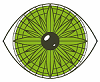 GEOVIS Equipe Research Team GEOVIS
The GeoVIS team provides geovisualization knowledge, methods and tools allowing various users to design graphic representations of spatio-temporal phenomena, and to infer spatio-temporal knowledge from the interaction with some dimensions of a phenomenon, based on spatial data (maps, imagery, 3D models, DTM, point clouds, etc.) and external data (texts, photographies, web data, thematic data, etc.). The heterogeneity (source, scale, content, precision, dimension, temporality) and the imprecision of these data and represented phenomena imply to address the following issues: The GeoVIS team contributes in geovisualization, which encompasses cartography, GIS, InfoVis, computer graphics and image processing fields of study.
L'équipe fournit des connaissances formalisées, méthodes et outils de géovisualisation permettant à des utilisateurs variés, de concevoir des représentations graphiques de phénomènes spatio-temporels, sur lesquelles raisonner spatialement et temporellement, en leur permettant d'interagir avec une ou plusieurs dimensions du phénomène, à partir de données géographiques (cartes, imagerie, modèles 3D, modèles numériques de terrain, nuages de points, etc.) et de données externes spatialisées (textes, photographies, données du web, données thématiques, etc.). L’hétérogénéité (source, échelle, contenu, précision, dimension, temporalité) et l'imprécision de ces données comme des phénomènes représentés, impliquent de résoudre des problématiques de :
Responsable de l'équipe: Head of the team: Sidonie Christophe 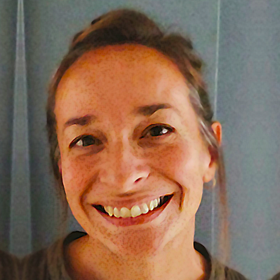
News
Actualités
• MapMuxing project in the ANR news: read the article here.
• IEEEVIS 2020: Accepted paper: 𝗚𝗮𝘂𝘁𝗶𝗲𝗿 J., 𝗕𝗿𝗲́𝗱𝗶𝗳 M., 𝗖𝗵𝗿𝗶𝘀𝘁𝗼𝗽𝗵𝗲 S., 2020. Co-visualization of air temperature and urban data for visual exploration. IEEE VIS Short Paper Proceedings, published in IEEE Xplore.
• ISPRS 2020: Accepted papers:
|
• 𝗕𝗿𝗲́𝗱𝗶𝗳 M., Caraffa L., Yirci M., Memari P. Provably Consistent Distributed Delaunay Triangulation. |

|
|
• 𝗟𝗲𝗹𝗲́𝗴𝗮𝗿𝗱 L., Le Bris A., Giordano S. Correction of systematic radiometric inhomogeneity in scanned aerial campaigns using principal component analysis. | 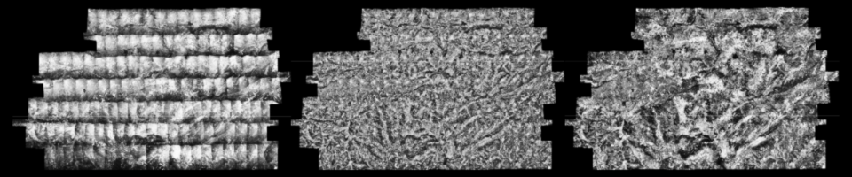 |
|
• 𝗟𝗼𝗯𝗼 M.-J., 𝗖𝗵𝗿𝗶𝘀𝘁𝗼𝗽𝗵𝗲 S. Opportunities and challenges for Augmented Reality situated geographical visualization. |

|
|
• 𝗣𝗮𝗶𝘇 𝗥𝗲𝘆𝗲𝘀 E., 𝗕𝗿𝗲́𝗱𝗶𝗳 M., 𝗖𝗵𝗿𝗶𝘀𝘁𝗼𝗽𝗵𝗲 S. Geometric distortion of historical images for 3D visualization. | 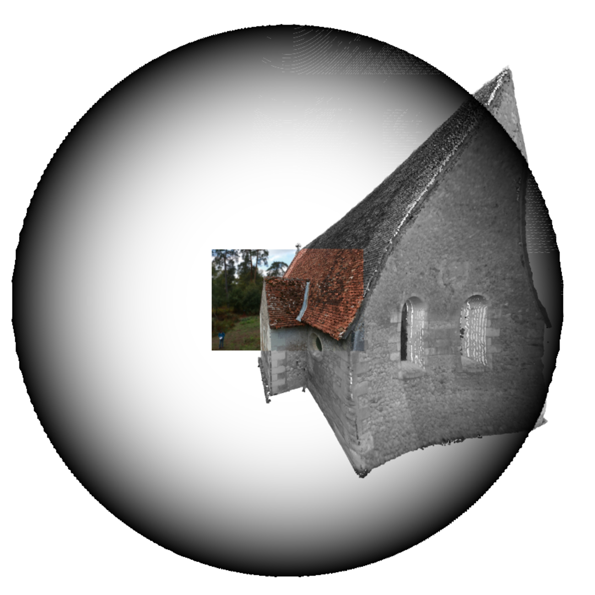 |
|
• 𝗚𝗮𝘂𝘁𝗶𝗲𝗿 J., 𝗖𝗵𝗿𝗶𝘀𝘁𝗼𝗽𝗵𝗲 S.,𝗕𝗿𝗲́𝗱𝗶𝗳 M. Visualizing 3D climate data in urban 3D models. | 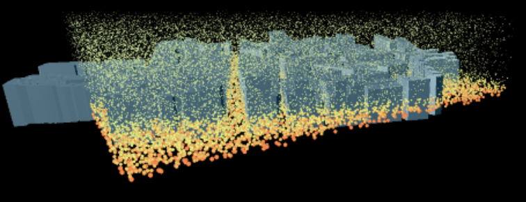 |
|
• Perrin O., 𝗖𝗵𝗿𝗶𝘀𝘁𝗼𝗽𝗵𝗲 S., 𝗝𝗮𝗰𝗾𝘂𝗶𝗻𝗼𝗱 F., Payrastre O. Visual analysis of inconsistencies in hydraulic simulation data. | 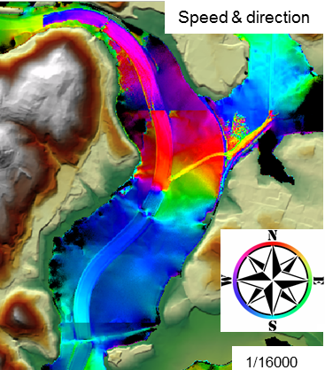 |
|
• 𝗧𝗼𝘂𝘆𝗮 G., Brisebard F., Quinton F., 𝗖𝗼𝘂𝗿𝘁𝗶𝗮𝗹 A. Inferring the Scale and Content of a Map Using Deep Learning. | 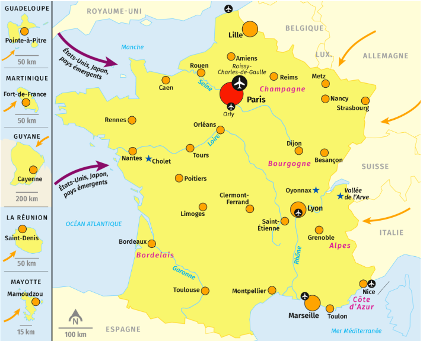 |
|
• Coetzee S., Rautenbach V., Çöltekin A., Madden M., Pettit C., 𝗖𝗵𝗿𝗶𝘀𝘁𝗼𝗽𝗵𝗲 S., Lkhamjav O. Towards SDG 4: Trade-offs for geospatial open educational resources. |
- Job Opportunities -
- Offres de poste -
Research topics
Sujets de recherche

Visualization. Visual integration and complexity, abstraction and level of detail (generalization, symbolization), graphic representation (graphic semiology, style).
Visualisation. Intégration et complexité visuelle, abstraction et gestion du niveau de détail (généralisation, symbolisation), représentation graphique (sémiologie graphique, style).
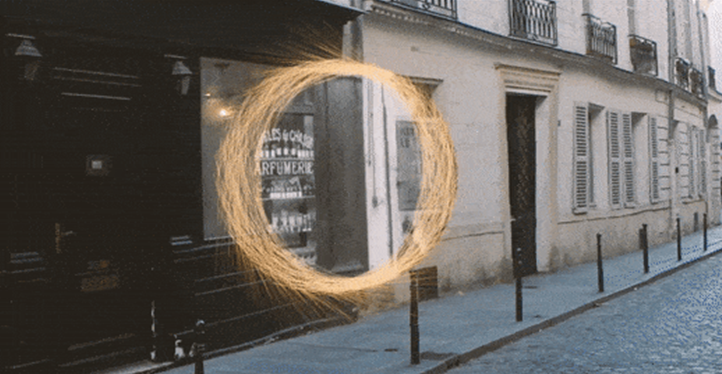 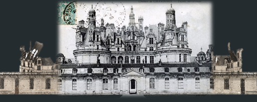
Interaction. Interaction between the users and the visualization, according to the support and use context, the users' tasks, and the visual characteristics or the specific spatial phenomena of study: interaction techniques and models, data and representations continuums, and also analysis and learning from interaction activities and traces.
Interaction. Interaction entre l'utilisateur et la visualisation, en fonction du support et du contexte d’utilisation, des tâches de l'utilisateur, et des caractéristiques visuelles ou phénomènes spatialisés à étudier : techniques et modalités d’interaction, continuums de données et de représentations, analyse et apprentissage à partir des traces d’interaction.
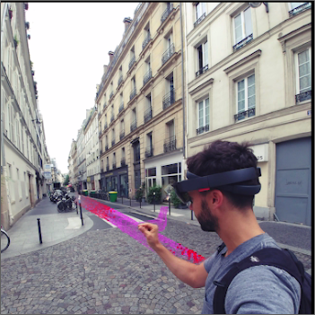
 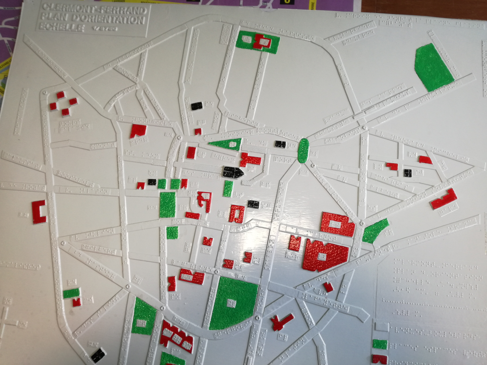
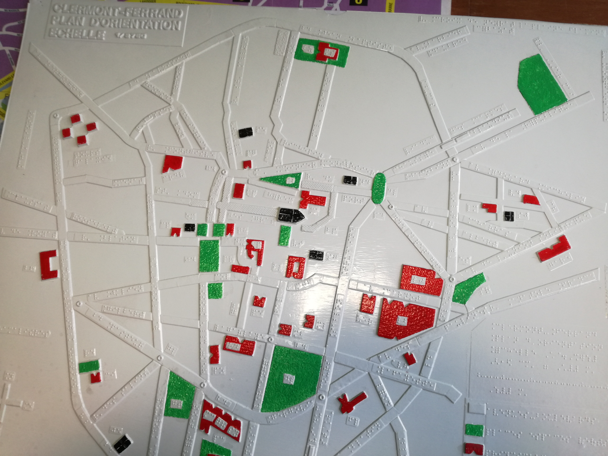
Spatial Immersion. Immersion through devices facilitating visual, tactile and sensitive perception, and the design of geographical spaces: virtual, augmented and mixed realities, tactile maps.
Immersion spatiale. via des dispositifs facilitant la perception visuelle, tactile et sensorielle, et le design des espaces géographiques : réalités virtuelle, augmentée et mixte, cartes tactiles.
Graphic rendering. Improvement of the physical rendering of images, geometric and radiometric analysis, web diffusion of massive data, and real-time 3D rendering.
Rendu Graphique. Amélioration du rendu physique des images, analyse géométrique et radiométrique, diffusion web de données massives, rendu 3D temps réel.
User experience (UX). Visual tests, surveys, and prototypes.
Expérimentation utilisateur (UX). Tests visuels, enquêtes, prototypage.
Staff
Membres
- Permanent staff -
- Membres permanents -
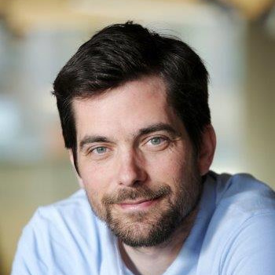 Mathieu BRÉDIF Senior researcher Chargé de recherche | Sidonie CHRISTOPHE Senior researcher -Head of GEOVIS team- Drectrice de recherche -Responsable de GEOVIS- | 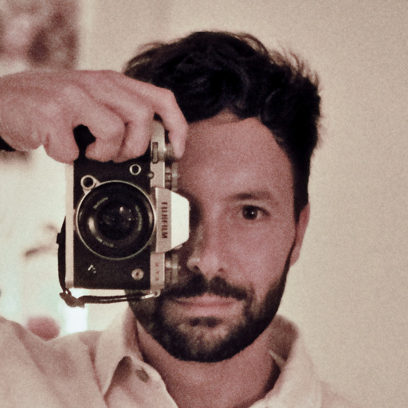 Alexandre DEVAUX Research engineer Ingénieur de recherche |
 Jacques GAUTIER Assistant Professor Enseignant-chercheur |
 Florence JACQUINOD Teacher-researcher (EIVP) Enseignante-chercheuse (EIVP) | Lâmân LELÉGARD Research engineer Ingénieur de recherche |
 María JesúsLOBO Research scientist Chargée de recherche CRCN MTES |
 Imran LOKHAT IT scientist Informaticien | 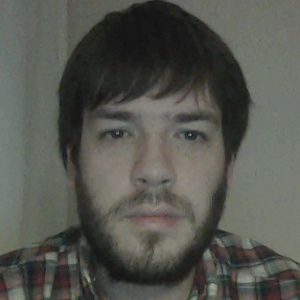 GuillaumeTOUYA Senior researcher Chercheur HDR |
- Temporary staff -
- CDD -
 Sébastien BINIEK PhD student Doctorant |  Azelle COURTIAL PhD student Doctortante | Evelyn PAIZ PhD student Doctortante |
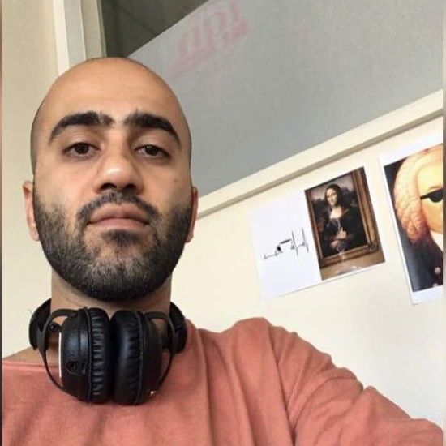 Qasem SAFARIALLAHKHEILI PhD student Doctorant |
- Alumni -
- Anciens -
- Pierre BIASUTTI, PhD student Doctorant
Projects
Projects
- On-going research projects -
- Projets en cours -
• Leader: Jean-Marie Favreau (LIMOS, Clermont-Ferrant). G. Touya & S. Christophe involved.
• Leader: Valéry Masson (MétéoFrance). J. Gautier (post-doc URCLIM), S. Christophe & M. Brédif involved.
• Leader: V. Gouet-Brunet (IGN)
• Porteur: J. Perret (IGN)
- Past research projects -
- Projets passés -
• Porteur: G. Touya (IGN)
• Porteur: S. Christophe (IGN)
Publications
- Main publications since 2018 -
- Publications majeures depuis 2018 -
2020• Çöltekin, A., Griffin, A. L., Slingsby, A., Robinson A. C., 𝗖𝗵𝗿𝗶𝘀𝘁𝗼𝗽𝗵𝗲, S., Rautenbach, V., Chen, M., Pettit, C., Klippel, A. 2020. Geospatial Information Visualization and Extended Reality Displays. Chapter 7, Manual of Digital Earth, ISDE.Eds: Huadong Guo, Michael F. Goodchild, Alessandro Annoni, ISDE. https://doi.org/10.1007/978-981-32-9915-3. pp229-274
• 𝗖𝗵𝗿𝗶𝘀𝘁𝗼𝗽𝗵𝗲 S. 2020. Geovisualization: multidimensional exploration of the territory. In Proceedings of the 15th International Joint Conference on Computer Vision, Imaging and Computer Graphics Theory and Applications - Volume 3: IVAPP, ISBN 978-989-758-402-2, ISSN 2184-4321, pages 325-332. DOI: 10.5220/0009355703250332, 2020, Valletta, Malta.
• 𝗖𝗼𝘂𝗿𝘁𝗶𝗮𝗹 A., El Ayedi A., 𝗧𝗼𝘂𝘆𝗮 G., and Zhang X. 2020. ‘Exploring the Potential of Deep Learning Segmentation for Mountain Roads Generalisation’ ISPRS International Journal of Geographic Information, 25 May 2020, 9 (5), 338. https://doi.org/10.3390/ijgi9050338
• Dumont M., 𝗧𝗼𝘂𝘆𝗮 G., Duchêne C. Designing multi-scale maps: lessons learned from existing practices. International Journal of Cartography, 6:1, 121-151, 2020. <10.1080/23729333.2020.1717832>
• 𝗚𝗮𝘂𝘁𝗶𝗲𝗿 J., 𝗕𝗿𝗲́𝗱𝗶𝗳 M., 𝗖𝗵𝗿𝗶𝘀𝘁𝗼𝗽𝗵𝗲 S., 2020. Co-visualization of air temperature and urban data for visual exploration. IEEE VIS Short Paper Proceedings, published in IEEE Xplore. [Accepted]
• 𝗟𝗼𝗯𝗼 M.-J., 𝗖𝗵𝗿𝗶𝘀𝘁𝗼𝗽𝗵𝗲 S. Opportunities and challenges for Augmented Reality situated geographical visualization. ISPRS Annals of the Photogrammetry, Remote Sensing and Spatial Information Sciences, 2020. ⟨hal-02878352⟩
• 𝗣𝗮𝗶𝘇 𝗥𝗲𝘆𝗲𝘀 E., 𝗕𝗿𝗲́𝗱𝗶𝗳 M., 𝗖𝗵𝗿𝗶𝘀𝘁𝗼𝗽𝗵𝗲 S. Geometric distortion of historical images for 3D visualization. ISPRS Annals of the Photogrammetry, Remote Sensing and Spatial Information Sciences, V-2-2020, 649–655, ⟨hal-02863366⟩
• 𝗧𝗼𝘂𝘆𝗮 G., 𝗟𝗼𝗸𝗵𝗮𝘁 I. 2020. Deep Learning for Enrichment of Vector Spatial Databases: Application to Highway Interchange. ACM Transactions on Spatial Algorithms and Systems, ACM, In press. 2020.
• Raposo P., 𝗧𝗼𝘂𝘆𝗮 G., and Bereuter P. 2020. ‘A Change of Theme: The Role of Generalization in Thematic Mapping’ ISPRS International Journal of Geographic Information, 4 June 2020, 9 (6), 371. https://doi.org/10.3390/ijgi9060371
2019• JR 2019 : GEOVIS PhD's posters:

• 𝗕𝗶𝗻𝗶𝗲𝗸 S., 𝗧𝗼𝘂𝘆𝗮 G., and Rouffineau G. 2019. ‘Fifty Shades of Roboto: Text Design Choices and Categories in Multi-Scale Maps’. In 29th International Cartographic Conference (ICC 2019), 1:1–8. Advances in Cartography and GIScience of the ICA. Tokyo, Japan, 2019. https://doi.org/10.5194/ica-adv-1-2-2019.
• 𝗖𝗵𝗿𝗶𝘀𝘁𝗼𝗽𝗵𝗲, S. 2019. Color Theory. The Geographic Information Science & Technology Body of Knowledge (1st Quarter 2019 Edition), John P. Wilson (Ed.). DOI: 10.22224/gistbok/2019.1.9
• Filières-Riveau, V. Barra, J.-M. Favreau, G., 𝗧𝗼𝘂𝘆𝗮 G. 2019. Enrichissement d'orthophotographie par des données OpenStreetMap pour l'apprentissage machine. SAGEO 2019, Clermont-Ferrand.
• Pierkot C., 𝗖𝗵𝗿𝗶𝘀𝘁𝗼𝗽𝗵𝗲 S., Girres J-F. 2019. Exploring multiplexing tools for co-visualization in crisis units. 16th International Conference on Information Systems for Crisis Response and Management (ISCRAM 2019) Valencia, Spain, May 19-22. p.403-420.
• 𝗧𝗼𝘂𝘆𝗮 G., Xiang Z., and 𝗟𝗼𝗸𝗵𝗮𝘁 I. 2019. ‘Is Deep Learning the New Agent for Map Generalization?’ International Journal of Cartography, 9 May 2019, 1–16. https://doi.org/10.1080/23729333.2019.1613071
2018• 𝗕𝗶𝗮𝘀𝘂𝘁𝘁𝗶 P., Aujol J.F., 𝗕𝗿𝗲́𝗱𝗶𝗳 M., Bugeau A. 2018. Diffusion and inpainting of reflectance and height LiDAR orthoimages. Computer Vision and Image Understanding, Elsevier, 2018. doi:10.1016/j.cviu.2018.10.011 (ISSN 1077-3142)
• 𝗕𝗶𝗮𝘀𝘂𝘁𝘁𝗶 P., Aujol J.F., 𝗕𝗿𝗲́𝗱𝗶𝗳 M., Bugeau A. 2018. Range-Image: Incorporating sensor topology for LiDAR point cloud processing. PE&RS Photogrammetric Engineering & Remote Sensing, ASPRS American Society for Photogrammetry and Remote Sensing, 2018, 84 (6), pp.367--375. <10.14358/PERS.84.6.367>.
• Devaux, A., C. Hoarau, M. Brédif and S. 𝗖𝗵𝗿𝗶𝘀𝘁𝗼𝗽𝗵𝗲. 2018. 3D urban geovisualization: in situ augmented and mixed reality experiments. ISPRS Annals of the Photogrammetry, Remote Sensing and Spatial Information Sciences.
• 𝗧𝗼𝘂𝘆𝗮 G., Christophe S., Favreau J. M., and Rhaiem A. B. 2018. ‘Automatic Derivation of On-Demand Tactile Maps for Visually Impaired People: First Experiments and Research Agenda’. International Journal of Cartography, 2018. https://doi.org/10.1080/23729333.2018.1486784.